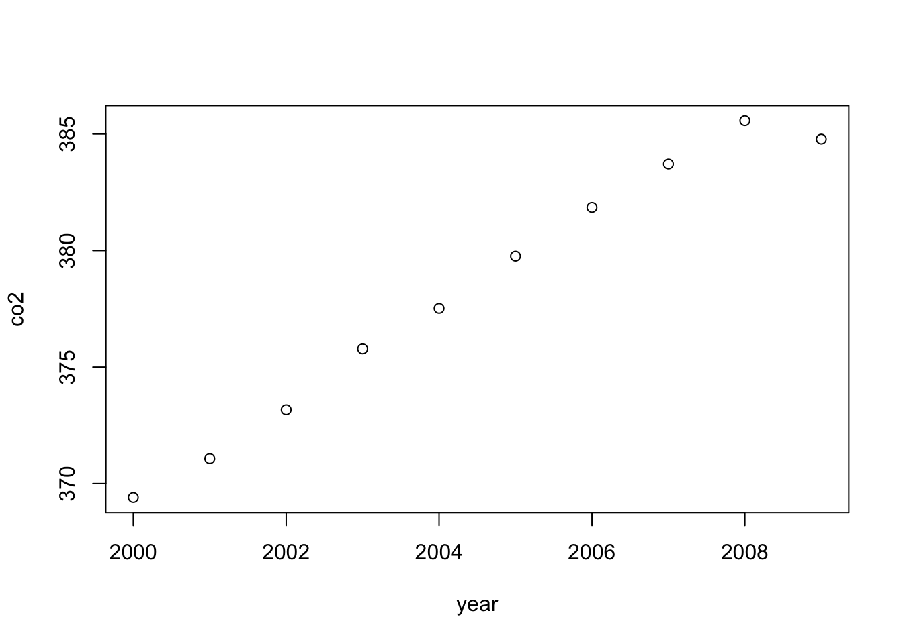

Chapter 15 Introduction to R
Statistics are no substitute for judgment
Henry Clay, U.S. congressman and senator
Learning objectives
Students completing this chapter will:
Be able to use R for file handling and basic statistics;
Be competent in the use of RStudio.
The R project
The R project supports ongoing development of R, a free software environment for statistical computing, data visualization, and data analytics. It is a highly-extensible platform, the R programming language is object-oriented, and R runs on the common operating systems. There is evidence to indicate that adoption of R has grown in recent years, and is now the one of the most popular analytics platform.
RStudio is a commonly used integrated development environment (IDE) for R. It contains four windows. The upper-left window contains scripts, one or more lines of R code that constitute a task. Scripts can be saved and reused. It is good practice to save scripts as you will find you can often edit an existing script to meet the needs of a new task. The upper-right window provides details of all datasets created. It also useful for importing datasets and reviewing the history of R commands executed. The lower-left window displays the results of executed scripts. If you want to clear this window, then press control-L. The lower-right window can be used to show files on your system, plots you have created by executing a script, packages installed and loaded, and help information.
Creating a project
It usually makes sense to store all R scripts and data in the same folder or directory. Thus, when you first start RStudio, create a new project.
Project > Create Project…
RStudio remembers the state of each window, so when you quit and reopen, it will restore the windows to their prior state. You can also open an existing project, which sets the path to the folder for that project. As a result, all saved scripts and files during a session are stored in that folder.
RStudio interface

Scripting
A script is a set of R commands. You can also think of it as a short program.
# CO2 parts per million (ppm) for 2000-2009
co2 <- c(369.40,371.07,373.17,375.78,377.52,379.76,381.85,383.71,385.57,384.78)
year <- (2000:2009) # a range of values
# show values
co2## [1] 369.40 371.07 373.17 375.78 377.52 379.76 381.85 383.71 385.57 384.78year## [1] 2000 2001 2002 2003 2004 2005 2006 2007 2008 2009# compute mean and standard deviation
mean(co2)## [1] 378.261sd(co2)## [1] 5.807934plot(year,co2)
The previous script
Creates an object co2 with the values 369.40, 371.07, … , 348.78.
Creates an object year with values 2000 through 2009.
Displays in the lower-left window the values stored in these two objects.
Computes the mean for each variable.
Creates an x-y plot of year and co2, which is shown in the lower-right window.
| Note the use of <- for assigning values to an object and that c is short for combine in the expression:39 |
Smart editingIt is not uncommon to find that a dataset you would like to use is in electronic format, but not in a format that matches your need. In most cases, you can use a word processor, spreadsheet, or text editor to reformat the data. In the case of the data in the previous table, here is a recipe for reformatting the data.
In some cases, you might find it quicker to copy a table to a spreadsheet, select each column within the spreadsheet, and then proceed as described above. This technique works well when the original table is in a pdf document. |
❓Skill builder
Plot kWh per square foot by year for the following University of Georgia data.
year square feet kWh 2007 14,214,216 2,141,705 2008 14,359,041 2,108,088 2009 14,752,886 2,150,841 2010 15,341,886 2,211,414 2011 15,573,100 2,187,164 2012 15,740,742 2,057,364 Data in R format
year <- (2007:2012)
sqft <- c(14214216, 14359041, 14752886, 15341886, 15573100, 15740742)
kwh <- c(2141705, 2108088, 2150841, 2211414, 2187164, 2057364)
Datasets
An R dataset is the familiar table of the relational model. There is one row for each observation, and the columns contain the observed values or facts about each observation. R supports multiple data structures and data types.
Vector
A vector is a single row table where data are all of the same type (e.g., character, logical, numeric). In the following sample code, two numeric vectors are created.
co2 <- c(369.40,371.07,373.17,375.78,377.52,379.76,381.85,383.71,385.57,384.78)
year <- (2000:2009)
co2[2] # show the second value## [1] 371.07Matrix
A matrix is a table where all data are of the same type. Because it is a table, a matrix has two dimensions, which need to be specified when defining the matrix. The sample code creates a matrix with 4 rows and 3 columns, as the results of the executed code illustrate.
m <- matrix(1:12, nrow=4,ncol=3)
m[4,3] # show the value in row 4, column 3## [1] 12| [,1] | [,2] | [,3] | |
|---|---|---|---|
| [1,] | 1 | 5 | 9 |
| [2,] | 2 | 6 | 10 |
| [3,] | 3 | 7 | 11 |
| [4,] | 4 | 8 | 12 |
❓Skill builder Create a matrix with 6 rows and 3 columns containing the numbers 1 through 18.
Array
An array is a multidimensional table. It extends a matrix beyond two dimensions. Review the results of running the following code by displaying the array created.
a <- array(letters[seq(1:24)], c(4,3,2))
a[1,1,1] # show the first value in the array## [1] "a"Data frame
While vectors, matrices, and arrays are all forms of a table, they are restricted to data of the same type (e.g., numeric). A data frame, like a relational table, can have columns of different data types. The sample code creates a data frame with character and numeric data types.
gender <- c("m","f","f")
age <- c(5,8,3)
df <- data.frame(gender,age)
# show some data frame values
df[1,2] # a cell## [1] 5df[1,] # a row## gender age
## 1 m 5df[,2] # a column## [1] 5 8 3List
The most general form of data storage is a list, which is an ordered collection of objects. It permits you to store a variety of objects together under a single name. In other words, a list is an object that contains other objects. Retrieve a list member with a single square bracket []. To reference a list member directly, use a double square bracket [[]].
l <- list(co2,m,df)
# show a list member
l[3] # retrieves list member## [[1]]
## gender age
## 1 m 5
## 2 f 8
## 3 f 3l[[3]] # reference a list member## gender age
## 1 m 5
## 2 f 8
## 3 f 3l[[1]][2] # second element of list 1## [1] 371.07Logical operators
R supports the common logical operators, as shown in the following table.
| Logical operator | Symbol |
|---|---|
| EQUAL | ==’ |
| AND | & |
| OR | |
| NOT | ! |
Object
In R, an object is anything that can be assigned to a variable. It can be a constant, a function, a data structure, a graph, a times series, and so on. You find that the various packages in R support the creation of a wide range of objects and provide functions to work with these and other objects. A variable is a way of referring to an object. Thus, we might use the variable named l to refer to the list object defined in the preceding subsection.
Types of data
R can handle the four types of data: nominal, ordinal, interval, and ratio. Nominal data, typically character strings, are used for classification (e.g., high, medium, or low). Ordinal data represent an ordering and thus can be sorted (e.g., the seeding or ranking of players for a tennis tournament). The intervals between ordinal data are not necessarily equal. Thus, the top seeded tennis play (ranked 1) might be far superior to the second seeded (ranked 2), who might be only marginally better than the third seed (ranked 3). Interval and ratio are forms of measurement data. The interval between the units of measure for interval data are equal. In other words, the distance between 50cm and 51cm is the same as the distance between 105cm and 106cm. Ratio data have equal intervals and a natural zero point. Time, distance, and mass are examples of ratio scales. Celsius and Fahrenheit are interval data types, but not ratio, because the zero point is arbitrary. As a result, 10º C is not twice as hot as 5º C. Whereas, Kelvin is a ratio data type because nothing can be colder than 0º K, a natural zero point.
In R, nominal and ordinal data types are also known as factors. Defining a column as a factor determines how its data are analyzed and presented. By default, factor levels for character vectors are created in alphabetical order, which is often not what is desired. To be precise, specify using the levels option.
rating <- c('high','medium','low')
rating <- factor(rating, order=T, levels = c('high','medium','low'))Thus, the preceding code will result in changing the default reporting of factors from alphabetical order (i.e., high, low, and medium) to listing them in the specified order (i.e., high, medium, and low).
Missing values
Missing values in R are represented as NA, meaning not available.
Infeasible values, such as the result of dividing by zero, are indicated
by NaN, meaning not a number. Any arithmetic expression or function
operating on data containing missing values will return NA. Thus
sum(c(1,NA,2)) will return NA.
To exclude missing values from calculations, use the option na.rm = T,
which specifies the removal of missing values prior to calculations.
Thus, sum(c(1,NA,2),na.rm=T) will return 3.
You can remove rows with missing data by using na.omit(), which will
delete those rows containing missing values.
gender <- c("m","f","f","f")
age <- c(5,8,3,NA)
df <- data.frame(gender,age)
df2 <- na.omit(df)Packages
A major advantage of R is that the basic software can be easily extended by installing additional packages, of which more than 6,000 exist. You can consult the R package directory to help find a package that has the functions you need.40 RStudio has an interface for finding and installing packages. See the Packages tab on RStudio’s lower-right window.
Before running a script, you need to indicate which packages it needs, beyond the default packages that are automatically loaded. The library statement specifies that a package is required for execution. The following example uses the measurements package to handle the conversion of Fahrenheit to Celsius. The package’s documentation provides details of how to use its various conversion options.
library(measurements) # previously installed
# convert F to C
conv_unit(100,'F','C')## [1] 37.77778❓Skill builder Install the measurements package and run the preceding code.
Reading a file
Files are the usual form of input for R scripts. Fortunately, R can handle a wide variety of input formats, including text (e.g., CSV), statistical package (e.g., SAS), and XML. A common approach is to use a spreadsheet to prepare a data file, export it as CSV, and then read it into R.
Files can be read from the local computer on which R is installed or the Internet, as the following sample code illustrates. We will use the readr library for handling files, so you will need to install it before running the following code.
library(readr)
# read a local file (this will not work on your computer)
t <- read_delim("Documents/R/Data/centralparktemps.txt", delim=",")You can also read a remote file using a URL.
library(readr)
# read using a URL
url <- 'http://www.richardtwatson.com/data/centralparktemps.txt'
t <- read_delim(url, delim=',')## Rows: 1794 Columns: 3## ── Column specification ────────────────────────────────────────────────────────
## Delimiter: ","
## dbl (3): year, month, temperature##
## ℹ Use `spec()` to retrieve the full column specification for this data.
## ℹ Specify the column types or set `show_col_types = FALSE` to quiet this message.You must define the separator for data fields with the delim keyword
(e.g., for a tab use delim='t').
Learning about a file
After reading a file, you might want to learn about its contents. First, you can click on the file’s name in the top-right window. This will open the file in the top-left window. If it is a long file, only a portion, such as the first 1000 rows, will be displayed. Second, you can execute some R commands, as shown in the following code, to show the first few and last few rows. You can also report the dimensions of the file, its structure, and the type of object.
library(readr)
url <- 'http://www.richardtwatson.com/data/centralparktemps.txt'
t <- read_delim(url, delim=',')## Rows: 1794 Columns: 3## ── Column specification ────────────────────────────────────────────────────────
## Delimiter: ","
## dbl (3): year, month, temperature##
## ℹ Use `spec()` to retrieve the full column specification for this data.
## ℹ Specify the column types or set `show_col_types = FALSE` to quiet this message.head(t) # first few rows## # A tibble: 6 × 3
## year month temperature
## <dbl> <dbl> <dbl>
## 1 1869 1 35.1
## 2 1869 10 50.9
## 3 1869 11 40.3
## 4 1869 12 34.7
## 5 1869 2 34.5
## 6 1869 3 34.8tail(t) # last few rows## # A tibble: 6 × 3
## year month temperature
## <dbl> <dbl> <dbl>
## 1 2018 1 31.7
## 2 2018 2 42
## 3 2018 3 40.1
## 4 2018 4 49.5
## 5 2018 5 66.9
## 6 2018 6 71.7dim(t) # dimension## [1] 1794 3str(t) # structure of a dataset## spec_tbl_df [1,794 × 3] (S3: spec_tbl_df/tbl_df/tbl/data.frame)
## $ year : num [1:1794] 1869 1869 1869 1869 1869 ...
## $ month : num [1:1794] 1 10 11 12 2 3 4 5 6 7 ...
## $ temperature: num [1:1794] 35.1 50.9 40.3 34.7 34.5 34.8 49.2 57.7 69.3 72.8 ...
## - attr(*, "spec")=
## .. cols(
## .. year = col_double(),
## .. month = col_double(),
## .. temperature = col_double()
## .. )
## - attr(*, "problems")=<externalptr>class(t) #type of object## [1] "spec_tbl_df" "tbl_df" "tbl" "data.frame"Referencing columns
Columns within a table are referenced by using the format tablename$columname. This is similar to the qualification method used in SQL. The following code shows a few examples. It also illustrates how to add a new column to an existing table.
library(measurements)
library(readr)
url <- 'http://www.richardtwatson.com/data/centralparktemps.txt'
t <- read_delim(url, delim=',')## Rows: 1794 Columns: 3## ── Column specification ────────────────────────────────────────────────────────
## Delimiter: ","
## dbl (3): year, month, temperature##
## ℹ Use `spec()` to retrieve the full column specification for this data.
## ℹ Specify the column types or set `show_col_types = FALSE` to quiet this message.# qualify with table name to reference a column
mean(t$temperature)## [1] 53.92246max(t$year)## [1] 2018range(t$month)## [1] 1 12# create a new column with the temperature in Celsius
t$Ctemp = round(conv_unit(t$temperature,'F','C'),1) # round to one decimalRecoding
Some analyses might be facilitated by the recoding of data. For instance, you might want to split a continuous measure into two categories. Imagine you decide to classify all temperatures greater than or equal to 25ºC as ‘hot’ and the rest as ‘other.’ Here are the R command to create a new column in table t called Category.
t$Category <- ifelse(t$Ctemp >= 30, 'Hot','Other')Deleting a column
You can delete a column by setting each of its values to NULL.
t$Category <- NULLReshaping data
Data are not always in the shape that you want. For example, you might have a spreadsheet that, for each year, lists the quarterly observations (i.e., year and four quarterly values in one row). For analysis, you typically need to have a row for each distinct observation (e.g., year, quarter, value). Gathering converts a document from what is commonly called wide to narrow format. It is akin to normalization in that the new table has year and quarter as the identifier of each observation.
Once the file has been read, you create appropriate column names for the converted file using the colnames() function applied to the file t. Thus, the input file has column names of Q1, Q2, etc, but it makes sense for these to be integers in the new file in a new column called quarter.
The gather command specifies the file to be gathered, the column names of the new file, and the columns of the input file to be gathered (i.e., the four quarters in columns 2 through 5). Note that you also need convert the column quarter from character to integer.
Reshaping data with gathering and
spreading
library(tidyverse)## ── Attaching packages ─────────────────────────────────────── tidyverse 1.3.1 ──## ✓ ggplot2 3.3.5 ✓ dplyr 1.0.7
## ✓ tibble 3.1.6 ✓ stringr 1.4.0
## ✓ tidyr 1.1.4 ✓ forcats 0.5.1
## ✓ purrr 0.3.4## ── Conflicts ────────────────────────────────────────── tidyverse_conflicts() ──
## x dplyr::filter() masks stats::filter()
## x dplyr::lag() masks stats::lag()url <- 'http://www.richardtwatson.com/data/gatherExample.csv'
t <- read_csv(url)## Rows: 2 Columns: 5## ── Column specification ────────────────────────────────────────────────────────
## Delimiter: ","
## dbl (5): year, Q1, Q2, Q3, Q4##
## ℹ Use `spec()` to retrieve the full column specification for this data.
## ℹ Specify the column types or set `show_col_types = FALSE` to quiet this message.t## # A tibble: 2 × 5
## year Q1 Q2 Q3 Q4
## <dbl> <dbl> <dbl> <dbl> <dbl>
## 1 2014 1 2 3 4
## 2 2015 5 6 7 8colnames(t) <- c('year',1:4)
t## # A tibble: 2 × 5
## year `1` `2` `3` `4`
## <dbl> <dbl> <dbl> <dbl> <dbl>
## 1 2014 1 2 3 4
## 2 2015 5 6 7 8# gather with data in columns 2 through 5
g <- gather(t,'quarter','value',2:5)
g$quarter <- as.integer(g$quarter)
g## # A tibble: 8 × 3
## year quarter value
## <dbl> <int> <dbl>
## 1 2014 1 1
## 2 2015 1 5
## 3 2014 2 2
## 4 2015 2 6
## 5 2014 3 3
## 6 2015 3 7
## 7 2014 4 4
## 8 2015 4 8# spread
s <- spread(g,quarter,value)
s## # A tibble: 2 × 5
## year `1` `2` `3` `4`
## <dbl> <dbl> <dbl> <dbl> <dbl>
## 1 2014 1 2 3 4
## 2 2015 5 6 7 8colnames(s) <- c('year', 'Q1','Q2','Q3','Q4')
s## # A tibble: 2 × 5
## year Q1 Q2 Q3 Q4
## <dbl> <dbl> <dbl> <dbl> <dbl>
## 1 2014 1 2 3 4
## 2 2015 5 6 7 8# Spreading takes a narrow file and converts it to wide or spreadsheet format. This is the reverse of gathering.
s <- spread(g,quarter,value)
s## # A tibble: 2 × 5
## year `1` `2` `3` `4`
## <dbl> <dbl> <dbl> <dbl> <dbl>
## 1 2014 1 2 3 4
## 2 2015 5 6 7 8colnames(s) <- c('year', 'Q1','Q2','Q3','Q4')
s## # A tibble: 2 × 5
## year Q1 Q2 Q3 Q4
## <dbl> <dbl> <dbl> <dbl> <dbl>
## 1 2014 1 2 3 4
## 2 2015 5 6 7 8Writing files
R can write data in a few file formats. We just focus on text format in this brief introduction. The following code illustrates how to create a new column containing the temperature in C and renaming an existing column. The revised table is then written as a csv text file to the project’s folder.
library(measurements)
library(readr)
url <- 'http://www.richardtwatson.com/data/centralparktemps.txt'
t <- read_delim(url, delim=',')## Rows: 1794 Columns: 3## ── Column specification ────────────────────────────────────────────────────────
## Delimiter: ","
## dbl (3): year, month, temperature##
## ℹ Use `spec()` to retrieve the full column specification for this data.
## ℹ Specify the column types or set `show_col_types = FALSE` to quiet this message.# compute Celsius and round to one decimal place
t$Ctemp = round(conv_unit(t$temperature,'F','C'),1)
colnames(t)[3] <- 'Ftemp' # rename third column to indicate Fahrenheit
write_csv(t,"centralparktempsCF.txt")Data manipulation with dplyr
The dplyr package41 provides functions for efficiently manipulating data sets. By providing a series of basic data handling functions and use of the pipe function ( %>% ),42 dplyr implements a grammar for data manipulation. The pipe function is used to pass data from one operation to the next.
Some dplyr functions
| Function | Purpose |
|---|---|
| filter() | Select rows |
| select() | Select columns |
| arrange() | Sort rows |
| summarize() | Compute a single summary statistic |
| group_by() | Pair with summarize() to analyze groups within a dataset |
| inner_join() | Join two tables |
| mutate() | Create a new column |
Here are some examples using dplyr with data frame t.
library(dplyr)
library(readr)
url <- 'http://www.richardtwatson.com/data/centralparktemps.txt'
t <- read_delim(url, delim=',')## Rows: 1794 Columns: 3## ── Column specification ────────────────────────────────────────────────────────
## Delimiter: ","
## dbl (3): year, month, temperature##
## ℹ Use `spec()` to retrieve the full column specification for this data.
## ℹ Specify the column types or set `show_col_types = FALSE` to quiet this message.# a row subset
trow <- filter(t, year == 1999)
# a column subset
tcol <- select(t, year)The following example illustrates application of the pipe function. The data frame t is piped to select(), and the results of select method passed onto filter(). The final output is stored in trowcol, which contains year, month, and Celsius temperature for the years 1990 through 1999.
# a combo subset and use of the pipe function
trowcol <- t %>% select(year, month, temperature) %>% filter(year > 1989 & year < 2000)Sorting
You can also use dplyr for sorting.
t <- arrange(t, desc(year),month)❓Skill builder
View the web page of yearly CO2 emissions (million metric tons) since the beginning of the industrial revolution.
Create a new text file using R
Clean up the file for use with R and save it as CO2.txt
Import (Import Dataset) the file into R
Plot year versus CO2 emissions
Summarizing data
The dplyr function can be used for summarizing data in a specified way (e.g., mean, minimum, standard deviation). In the sample code, a file containing the mean temperature for each year is created. Notice the use of the pipe function to first group the data by year and then compute the mean for each group.
library(dplyr)
url <- 'http://www.richardtwatson.com/data/centralparktemps.txt'
t <- read_delim(url, delim=',')## Rows: 1794 Columns: 3## ── Column specification ────────────────────────────────────────────────────────
## Delimiter: ","
## dbl (3): year, month, temperature##
## ℹ Use `spec()` to retrieve the full column specification for this data.
## ℹ Specify the column types or set `show_col_types = FALSE` to quiet this message.w <- t %>% group_by(year) %>% summarize(averageF = mean(temperature))Adding a column
The following example shows how to add a column and compute its average.
# add column
t <- mutate(t, CTemp = (temperature-32)*5/9)
# summarize
summarize(t, mean(CTemp))## # A tibble: 1 × 1
## `mean(CTemp)`
## <dbl>
## 1 12.2❓Skill builder Create a file with the maximum temperature for each year.
Merging files
If there is a common column in two files, then they can be merged using dplyr.::inner_join().43 This is the same as joining two tables using a primary key and foreign key match. In the following code, a file is created with the mean temperature for each year, and it is merged with CO2 readings for the same set of years.
library(dplyr)
library(readr)
url <- 'http://www.richardtwatson.com/data/centralparktemps.txt'
t <- read_delim(url, delim=',')## Rows: 1794 Columns: 3## ── Column specification ────────────────────────────────────────────────────────
## Delimiter: ","
## dbl (3): year, month, temperature##
## ℹ Use `spec()` to retrieve the full column specification for this data.
## ℹ Specify the column types or set `show_col_types = FALSE` to quiet this message.# average monthly temp for each year
a <- t %>% group_by(year) %>% summarize(mean = mean(temperature))
# read yearly carbon data (source: http://co2now.org/Current-CO2/CO2-Now/noaa-mauna-loa-co2-data.html)
url <- 'http://www.richardtwatson.com/data/carbon1959-2011.txt'
carbon <- read_delim(url, delim=',') ## Rows: 53 Columns: 2## ── Column specification ────────────────────────────────────────────────────────
## Delimiter: ","
## dbl (2): year, CO2##
## ℹ Use `spec()` to retrieve the full column specification for this data.
## ℹ Specify the column types or set `show_col_types = FALSE` to quiet this message.m <- inner_join(a,carbon)## Joining, by = "year"head(m)## # A tibble: 6 × 3
## year mean CO2
## <dbl> <dbl> <dbl>
## 1 1959 55.4 316.
## 2 1960 54.0 317.
## 3 1961 55.0 318.
## 4 1962 53.4 318.
## 5 1963 53.6 319.
## 6 1964 54.6 320.Data manipulation with sqldf
The sqldf package enables use of the broad power of SQL to extract rows or columns from a data frame to meet the needs of a particular analysis. It provides essentially the same data manipulation capabilities as dplyr. The following example illustrates use of sqldf.
library(sqldf)## Loading required package: gsubfn## Loading required package: proto## Warning in doTryCatch(return(expr), name, parentenv, handler): unable to load shared object '/Library/Frameworks/R.framework/Resources/modules//R_X11.so':
## dlopen(/Library/Frameworks/R.framework/Resources/modules//R_X11.so, 0x0006): Library not loaded: /opt/X11/lib/libSM.6.dylib
## Referenced from: /Library/Frameworks/R.framework/Versions/4.1-arm64/Resources/modules/R_X11.so
## Reason: tried: '/opt/X11/lib/libSM.6.dylib' (no such file), '/Library/Frameworks/R.framework/Resources/lib/libSM.6.dylib' (no such file), '/Library/Java/JavaVirtualMachines/jdk-17.jdk/Contents/Home/lib/server/libSM.6.dylib' (no such file)## Warning in system2("/usr/bin/otool", c("-L", shQuote(DSO)), stdout
## = TRUE): running command ''/usr/bin/otool' -L '/var/folders/
## m3/0wz4s80d4l595_111vshn2r40000gp/T//RtmpBDZj1C/renv-system-library/tcltk/libs//
## tcltk.so'' had status 1## Could not load tcltk. Will use slower R code instead.## Loading required package: RSQLite##
## Attaching package: 'RSQLite'## The following object is masked from 'package:RMySQL':
##
## isIdCurrent## sqldf will default to using MySQLlibrary(readr)
options(sqldf.driver = "SQLite") # to avoid a conflict with RMySQL
url <- 'http://www.richardtwatson.com/data/centralparktemps.txt'
t <- read_delim(url, delim=',')## Rows: 1794 Columns: 3## ── Column specification ────────────────────────────────────────────────────────
## Delimiter: ","
## dbl (3): year, month, temperature##
## ℹ Use `spec()` to retrieve the full column specification for this data.
## ℹ Specify the column types or set `show_col_types = FALSE` to quiet this message.# a row subset
trowcol <- sqldf("select year, month, temperature from t where year > 1989 and year < 2000")However, sqldf does not enable you to embed R functions within an SQL command. For this reason, dplyr is the recommended approach for data manipulation. However, there might be occasions when you find it more efficient to first execute a complex query in SQL and then do further analysis with dplyr.
Correlation coefficient
A correlation coefficient is a measure of the covariation between two sets of observations. In this case, we are interested in whether there is a statistically significant covariation between temperature and the level of atmospheric CO2.44
cor.test(m$mean, m$CO2)##
## Pearson's product-moment correlation
##
## data: m$mean and m$CO2
## t = 3.1173, df = 51, p-value = 0.002997
## alternative hypothesis: true correlation is not equal to 0
## 95 percent confidence interval:
## 0.1454994 0.6049393
## sample estimates:
## cor
## 0.4000598The following results indicate that a correlation of .40 is a statistically significant as the p-value is less than 0.05, the common threshold for significance testing. Thus, we conclude that, because there is a small chance (p = .002997) of observing by chance such a value for the correlation coefficient, there is a relationship between mean temperature and the level of atmospheric CO2. Given that global warming theory predicts an increase in temperature with an increase in atmospheric CO2, we can also state that the observations support this theory. In other words, an increase in CO2 increases temperatures in Central Park.
Pearson’s product-moment correlation data: m\(mean and m\)CO2 t = 3.1173, df = 51, p-value = 0.002997 95 percent confidence interval: 0.1454994 0.6049393 sample estimates: cor 0.4000598 |
When reporting correlation coefficients, you can you use the terms small, moderate, and large in accordance with the values specified in following table.
| Correlation coefficient | Effect size |
|---|---|
| .10 - .30 | Small |
| .30 - .50 | Moderate |
| > .50 | Large |
If we want to understand the nature of the relationship, we could fit a linear model.
mod <- lm(m$mean ~ m$CO2)
summary(mod)##
## Call:
## lm(formula = m$mean ~ m$CO2)
##
## Residuals:
## Min 1Q Median 3Q Max
## -2.1260 -0.7227 0.1217 0.6490 2.1189
##
## Coefficients:
## Estimate Std. Error t value Pr(>|t|)
## (Intercept) 48.291319 2.149937 22.462 <2e-16 ***
## m$CO2 0.019208 0.006162 3.117 0.003 **
## ---
## Signif. codes: 0 '***' 0.001 '**' 0.01 '*' 0.05 '.' 0.1 ' ' 1
##
## Residual standard error: 1.016 on 51 degrees of freedom
## Multiple R-squared: 0.16, Adjusted R-squared: 0.1436
## F-statistic: 9.718 on 1 and 51 DF, p-value: 0.002997The following results indicate a linear model is significant (p < .05), and it explains 14.36% (adjusted multiple R-squared) of the variation between temperature and atmospheric CO2. The linear equation is
\[temperature = 48.29 + 0.019208* CO2\]
As CO2 emissions are measured in parts per millions (ppm), an increase of 1.0 ppm predicts an annual mean temperature increase in Central Park of .01920 F°. Currently CO2 emissions are increasing at about 2.0 ppm per year.
As a linear model explains about 14% of the variation, this suggests that there might other variables that should be considered (e.g., level of volcanic activity) and that the relationship might not be linear.
| timestamp | airTemp | humidity | p recipitation | |
|---|---|---|---|---|
| 1 | 2010-01-01 03:00:00 | 44 | 93 | 0 |
| 2 | 2010-01-01 04:00:00 | 44 | 89 | 0 |
| 3 | 2010-01-01 05:00:00 | 43 | 89 | 0 |
| 4 | 2010-01-01 06:00:00 | 42 | 83 | 0 |
| 5 | 2010-01-01 07:00:00 | 41 | 86 | 0 |
| 6 | 2010-01-01 08:00:00 | 40 | 79 | 0 |
Database access
The DBI package provides a convenient way for a direct connection between R and a relational database, such as MySQL or PostgreSQL. Once the connection has been made, you can run an SQL query and load the results into a R data frame.
The dbConnect() function makes the connection. You specify the type of relational database, url, database name, userid, and password, as shown in the following code.45
library(DBI)
conn <- dbConnect(RMySQL::MySQL(), "www.richardtwatson.com", dbname="Weather", user="student", password="student")
# Query the database and create file t for use with R
t <- dbGetQuery(conn,"select * from record;")
head(t)## Timestamp Temperature
## 1 2010-01-01 01:00:00 44
## 2 2010-01-01 02:00:00 44
## 3 2010-01-01 03:00:00 44
## 4 2010-01-01 04:00:00 44
## 5 2010-01-01 05:00:00 43
## 6 2010-01-01 06:00:00 42For security reasons, it is not a good idea to put database access details in your R code. They should be hidden in a file. I recommend that you create a csv file within your R code folder to containing database access parameters. First, create a new directory or folder (File > New Project > New Directory > Empty Project), called dbaccess for containing you database access files. Then, create a csvfile (Use File > New File > Text File) with the name weather_richardtwatson.csv in the newly created folder containing the following data:
url,dbname,user,password:
richardtwatson.com,Weather,student,student
The R code will now be:
# Database access
library(readr)
library(DBI)
url <- 'dbaccess/weather_richardtwatson.csv'
d <- read_csv(url)
conn <- dbConnect(RMySQL::MySQL(), d$url, dbname=d$dbname, user=d$user, password=d$password)
t <- dbGetQuery(conn,"SELECT timestamp, airTemp from record;")
head(t)Despite the prior example, I will continue to show database access parameters because you need them to run the sample code. However, in practice you should follow the security advice given.
Timestamps
Many data sets include a timestamp to indicate when an observation was recorded. A timestamp will show the data and time to the second or microsecond. The format of a standard timestamp is yyyy-mm-dd hh:mm:ss (e.g., 2010-01-31 03:05:46).
Some R functions, including those in the lubridate package, can detect a standard format timestamp and support operations for extracting parts of it, such as the year, month, day, hour, and so forth. The following example shows how to use lubridate to extract the month and year from a character string in standard timestamp format.
library(lubridate)
library(DBI)
conn <- dbConnect(RMySQL::MySQL(), "www.richardtwatson.com", dbname="Weather", user="student", password="student")
# Query the database and create file t for use with R
t <- dbGetQuery(conn,"select * from record;")
t$year <- year(t$timestamp)
t$month <- month(t$timestamp)
head(t)Excel files
There are a number of packages with methods for reading an Excel file. Of these, readxl seems to be the simplest. However, it can handle only files stored locally, which is the case with most of the packages examined. If the required Excel spreadsheet is stored remotely, then download it and store lit ocally.
library(readxl)
library(httr)
# read remote file and store on disk
url <- 'http://www.richardtwatson.com/data/GDP.xlsx'
GET(url,write_disk('temp.xlsx',overwrite = TRUE))## Response [https://www.richardtwatson.com/data/GDP.xlsx]
## Date: 2021-12-26 18:44
## Status: 200
## Content-Type: application/vnd.openxmlformats-officedocument.spreadsheetml.sheet
## Size: 888 kB
## <ON DISK> /Users/rickwatson/Dropbox/R/DataManagement/temp.xlsxe <- read_excel('temp.xlsx',sheet = 1,col_names = TRUE)R resources
The vast number of packages makes the learning of R a major challenge. The basics can be mastered quite quickly, but you will soon find that many problems require special features or the data need some manipulation. Once you learn how to solve a particular problem, make certain you save the script, with some embedded comments, so you can reuse the code for a future problem. There are books that you might find useful to have in electronic format on your computer or tablet, and one of these is listed at the end of the chapter. There are, however, many more books,46 both of a general and specialized nature. The R Reference Card is handy to keep nearby when you are writing scripts. I printed and laminated a copy, and it’s in the top drawer of my desk. A useful website is Quick-R, which is an online reference for common tasks, such as those covered in this chapter. For a quick tutorial, you can Try R.
R and data analytics
R is a platform for a wide variety of data analytics, including
Statistical analysis
Data visualization
HDFS and cluster computing
Text mining
Energy Informatics
Dashboards
You have probably already completed an introductory statistical analysis course, and you can now use R for all your statistical needs. In subsequent chapters, we will discuss data visualization, HDFS and cluster computing, and text mining. Energy Informatics is concerned with optimizing energy flows, and R is an appropriate tool for analysis and optimization of energy systems. R is being used extensively to analyze climate change data.47
R is also a programming language. You might find that in some situations, R provides a quick method for reshaping files and performing calculations.
Summary
R is a free software environment for statistical computing, data visualization, and data analytics. RStudio is a commonly used integrated development environment (IDE) for R. A script is a set of R commands. Store all R scripts and data for a project in the same folder or directory. An R dataset is a table that can be stored as a vector, matrix, array, data frame, and list. In R, an object is anything that can be assigned to a variable. R can handle the four types of data: nominal, ordinal, interval, and ratio. Nominal and ordinal data types are also known as factors. Defining a column as a factor determines how its data are analyzed and presented. Missing values are indicated by NA. R can handle a wide variety of input formats, including text (e.g., CSV), statistical package (e.g., SAS), and XML. Data can be reshaped. Gathering converts a document from what is commonly called wide to narrow format. Spreading takes a narrow file and converts it to wide format. Columns within a table are referenced using the format tablename$columname. R can write data to a file. A major advantage of R is that the basic software can be easily extended by installing additional packages. The dplyr packages adds functionality for data management and reporting. Learning R is a major challenge because of the many packages available.
Key terms and concepts
| Aggregate | R |
| Array | Reshape |
| Data frame | Script |
| Data type | Spread |
| Factor | SQL |
| Gather | Tibble |
| List | Subset |
| Matrix | Vector |
| Package |
References
Wickham, H., & Grolemund, G. (2017). R for data science: O’Reilly.
Exercises
Access richardtwatson.com/data/manheim.txt which contains details of the sales of three car models: X, Y, and Z.
Use the table function to compute the number of sales for each type of model.
Use the table function to compute the number of sales for each type of sale.
Report the mean price for each model.
Report the mean price for each type of sale.
Use the ‘Import Dataset’ feature of RStudio to read http://www.richardtwatson.com/data/electricityprices.csv, which contains details of electricity prices for a major city.48
What is the maximum cost?
What is the minimum cost?
What is the mean cost?
What is the median cost?
Read the table richardtwatson.com/data/wealth.csv containing details of the wealth of various countries and complete the following exercises.
Sort the table by GDP per capita.
What is the average GDP per capita?
Compute the ratio of US GDP per capita to the average GDP per capita.
What’s the correlation between GDP per capita and wealth per capita?
Merge the data for weather (database weather at richardtwatson.com discussed in the chapter) and electricity prices (Use RStudio’s ‘Import Dataset’ to read http://www.richardtwatson.com/data/electricityprices.csv) and compute the correlation between temperature and electricity price. Hint: MySQL might return a timestamp with decimal seconds (e.g., 2010-01-01 01:00:00.0), and you can remove the rightmost two characters using substr(),49 so that the two timestamp columns are of the same format and length. Also, you need to ensure that the timestamps from the two data frames are of the same data type (e.g., both character).
Get the list of failed US banks from https://explore.data.gov/Banking-Finance-and-Insurance/FDIC-Failed-Bank-List/pwaj-zn2n.
Determine how many banks failed in each state.
How many banks were not acquired (hint: nrow() will count rows in a table)?
How many banks were closed each year (hint: use strptime() and the lubridate package)?
Use Table01 of U.S. broccoli data on farms and area harvested from http://usda.mannlib.cornell.edu/MannUsda/viewDocumentInfo.do?documentID=1816. Get rid of unwanted rows to create a spreadsheet for the area harvested with one header row and the 50 states. Change cells without integer values to 0 and save the file in CSV format for reading with R.
Reshape the data so that each observation contains state name, year, and area harvested.
Add hectares as a column in the table. Round the calculation to two decimal places.
Compute total hectares harvested each year for which data are available.
Save the reshaped file.
RStudio provides a keyboard command, which is Alt+- (Windows & Linux) or Option+- (Mac)↩︎
http://cran.rstudio.com/web/packages/dplyr/vignettes/introduction.html↩︎
Short cuts is Ctrl+Shift+M (Windows & Linux) and Cmd+Shift+M (Mac)↩︎
This is the R notation for indicating the package (dplyr) to which a method (inner_join) belongs.↩︎
As I continually revise data files to include the latest observations, your answer might differ for this and other analyses.↩︎
You will likely get a warning message of the form “unrecognized MySQL field type 7 in column 0 imported as character,” because R does does recognize the first column as a timestamp. You can ignore it, but later you might need to convert the column to R’s timestamp format.↩︎
http://chartsgraphs.wordpress.com/category/r-climate-data-analysis-tool/↩︎
Note these prices have been transformed from the original values, but are still representative of the changes over time.↩︎